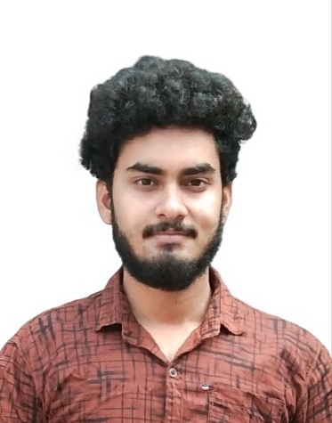

Ravindranath Singh

- Email:ravi************@gmail.com
- Phone:+91-63******30
Summary:
An enterprise storage virtualization and backend support engineer tasked with supporting some of the most critical storage area networks at the world's major institutions. Responsible for providing reactive and proactive measures to ensure high availability.
Education:
Work Experience:
Storage Administrator at Wipro limited (Gopanpally, Hyderabad, India)
- Provide remote support for DELL EMC's VPlex storage virtualization appliance. Troubleshoot SAN configurations, internal and external IP connectivity and Linux kernel issues.
- Engage in cross-business-unit collaborations to leverage technical expertise across solutions (VMAX, VNX, XtremIO, RecoverPoint, Cisco/Brocade, AIX/ESX/Linux/SunOS/Windows)
- Perform Root Cause Analysis (RCA), log analysis and assist in documenting analysis, findings and recommendations.
- Effective management of customer severity and customer relation throughout the life-cycle of a service request.
- Improve and maintain customer experience by collaborating with and engaging the local account team.
- Engage in cross-vendor technical discussions to expedite customer issues and reduce customer impact/ downtime.
- Compile and leverage technical Knowledge Base Articles (KBA) to improve Knowledge Centered Service (KCS) experience for customers and internal personnel.
- Basic Computer Networking troubleshooting.
- Processed the information on various automation bots like SLA, SLO and MLA(multiple level authentication) for smooth and fast delivery in short time.
Skills:
- Storage Arrays : EMC Unified – VPlex
- Platform : Unisphere/GUI, CLI, ESRS.
- Add-On/Protocols: RAID, SAN, NAS, Replication, Migration, Upgrade.
- OS Awareness : Linux, Windows
Awards, certifications, or other achievements:
Strengths:
- Leadership Skills
- Good communication skills
- Keen and Self-Learner
- Ability to work under Pressure
- Positive attitude towards new challenges
- Committed towards Work
Achievements:
- Received multiple customer and accounts team appreciations on various hot and escalated cases.
- Received quality star award by EMC.